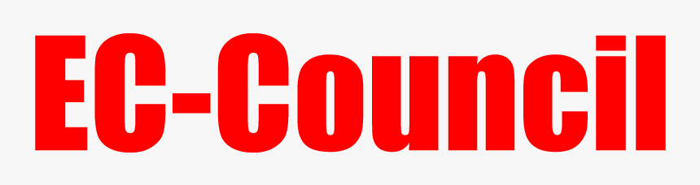
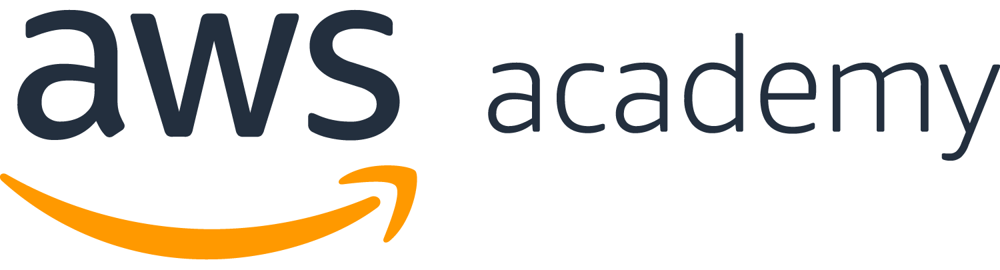
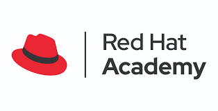
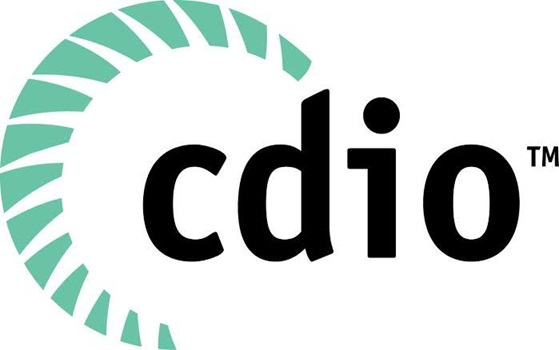
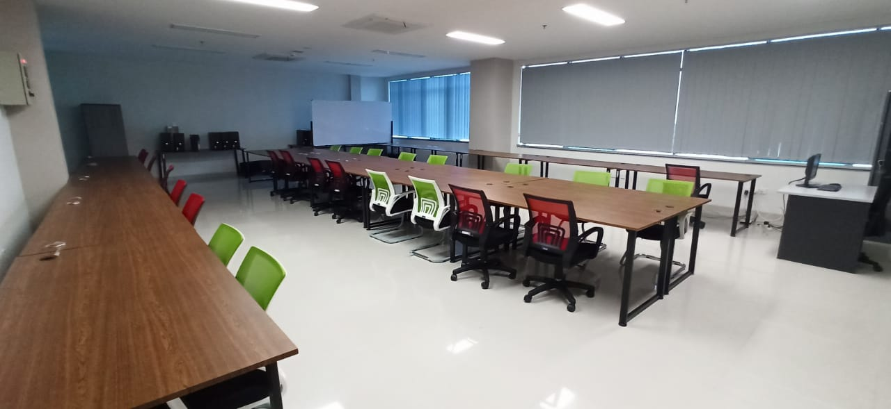
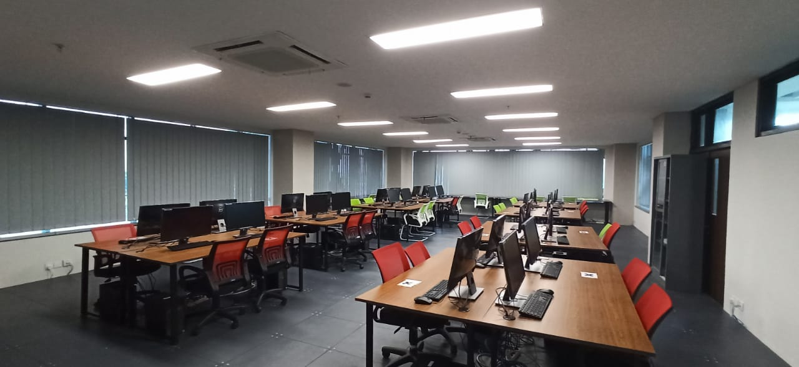
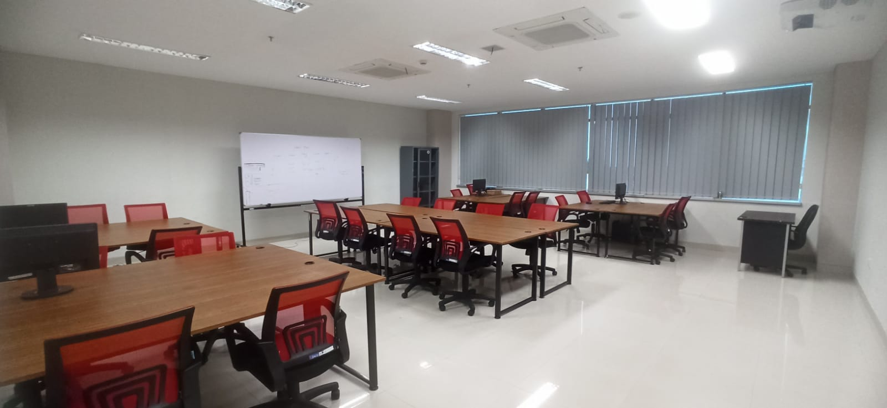
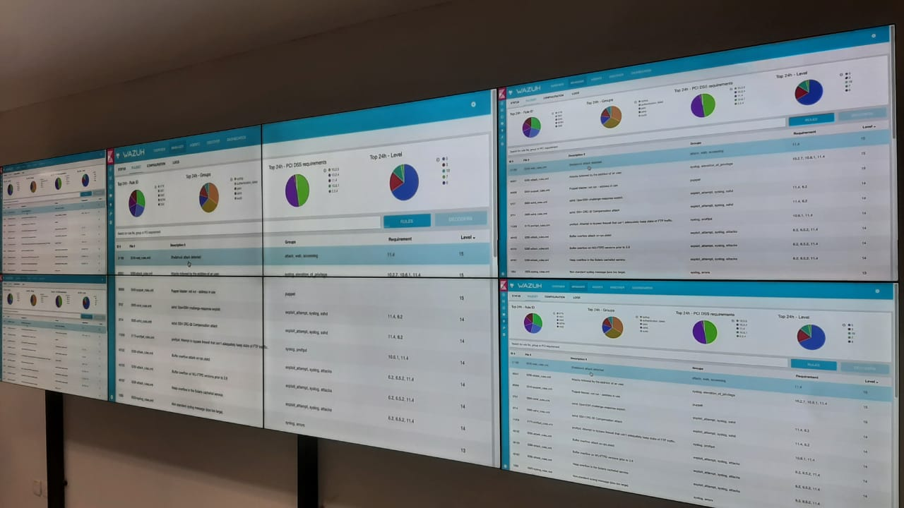
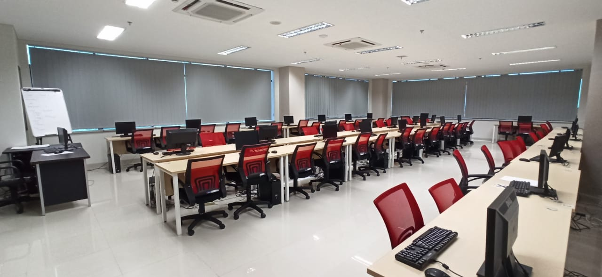
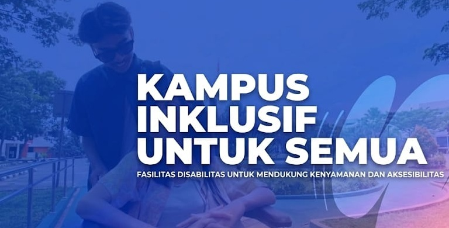

Raih Gelar D4 Sarjana Terapan di Prodi RKS
Program studi Sarjana Terapan mendidik spesialis siber, SOC Analyst, & Pen-Tester berstandar internasional dengan Akreditasi Perdana meraih predikat BAIK SEKALI dari LAM INFOKOM, lisensi EC-Council, Cisco, AWS, serta akreditasi IABEE.
Keunggulan Utama Program Studi
Kombinasi kurikulum berstandar industri siber, pengajar praktisi berpengalaman, dan lab operasi keamanan 24/7.
Praktik Real-Time di Lab Security Operations Center (SOC)
Mahasiswa dilatih langsung menangani serangan siber nyata, malware analysis, incident response, dan threat hunting.
Eksplor Fasilitas Lab →Jenjang DIV / Sarjana Terapan
4 Tahun masa studi terstruktur dengan magang industri 1-2 semester penuh.
Lisensi & Sertifikasi Global
Dukungan ujian EC-Council (CEH, CND, CHFI), Cisco CCNA/CyberOps, AWS, dan CertNexus.
Posisi Spesialis Keamanan
Lulusan diserap sebagai Cyber Security Analyst, SOC Administrator, hingga Vulnerability Assessor.
Akreditasi Perdana BAIK SEKALI & Standard IABEE
Akreditasi pertama langsung berhasil meraih predikat BAIK SEKALI dari LAM INFOKOM dan pengakuan IABEE.
Mengenal Lebih Dekat D4 Rekayasa Keamanan Siber
Pelajari Visi, Misi, Tujuan & Sasaran Strategis prodi RKS Polibatam, serta saksikan video profil kampus.
Visi, Misi, Tujuan & Sasaran
"Menjadi program studi vokasi yang unggul, terkemuka, dan berdaya saing internasional di bidang Rekayasa Keamanan Siber pada tahun 2030."
Berfokus pada pengembangan talenta teknikal berpikiran kritis, adaptif terhadap ancaman siber global, serta berintegritas tinggi.
Saksikan fasilitas unggulan dan lingkungan inovatif kami yang mencetak profesional keamanan siber berstandar global.
Profil Profesional Mandiri Lulusan
Pernyataan yang secara luas menggambarkan karir dan pencapaian profesional yang dipersiapkan oleh program untuk dicapai lulusan 3 hingga 5 tahun setelah lulus.
Eksplorasi Kompetensi & CPL Lulusan
Kemampuan spesifik yang dibentuk secara bertahap selama 8 semester pembelajaran praktis di Politeknik Negeri Batam.
Posisi Spesialis Keamanan Siber
Profil lulusan yang paling dicari oleh perusahaan multinasional, perbankan, instansi pemerintah, dan SOC global.
Mitra Akademi & 20+ Sertifikasi Internasional
Lulusan dibekali lisensi profesi yang diakui secara global untuk bersaing di industri nasional & internasional.
Mitra Akademi Resmi:




Fasilitas Terkini & Kampus Inklusif
Dukungan infrastruktur enterprise dan komitmen menyediakan lingkungan belajar yang ramah bagi semua kalangan.

Ruang 10.3Laboratorium Penetration Testing
Dilengkapi workstation performa tinggi untuk pengujian celah keamanan, analisis malware, dan simulasi penyerangan siber.

Ruang 10.4Laboratorium Cyber Operations Center
Pusat pemantauan lalu lintas jaringan real-time dan analisis ancaman siber berbasis Security Operations Center (SOC).

Ruang 11.3Laboratorium Jaringan & Infrastruktur
Perangkat router, switch, firewall enterprise Cisco & Fortinet untuk konfigurasi arsitektur jaringan aman skala besar.

Ruang 11.4Laboratorium Digital Forensics
Fasilitas khusus investigasi bukti digital, analisis artifacts, pemulihan data, dan pembuatan laporan forensik hukum.

Ruang 11.5Laboratorium Research & Development
Ruang kolaborasi riset dosen dan mahasiswa untuk pengerjaan tugas akhir, proyek industri (PBL), dan kompetisi CTF.
Polibatam merupakan kampus yang mendukung inklusivitas. Kami menyediakan fasilitas ramah disabilitas, ruang belajar yang nyaman, serta layanan pendukung untuk memastikan setiap mahasiswa memiliki kesempatan yang sama untuk meraih prestasi terbaik mereka.

Tim Prodi & Pengajar RKS
Dosen berlatar akademis kuat & memiliki bersertifikasi internasional spesialis di bidang jaringan dan keamanan siber.
Siapkan Karir Keamanan Siber Anda Bersama RKS Polibatam
Bergabunglah dalam jajaran profesional yang menjaga aset digital bangsa. Pilih jalur pendaftaran SNBP, SNBT, atau Mandiri Polibatam.